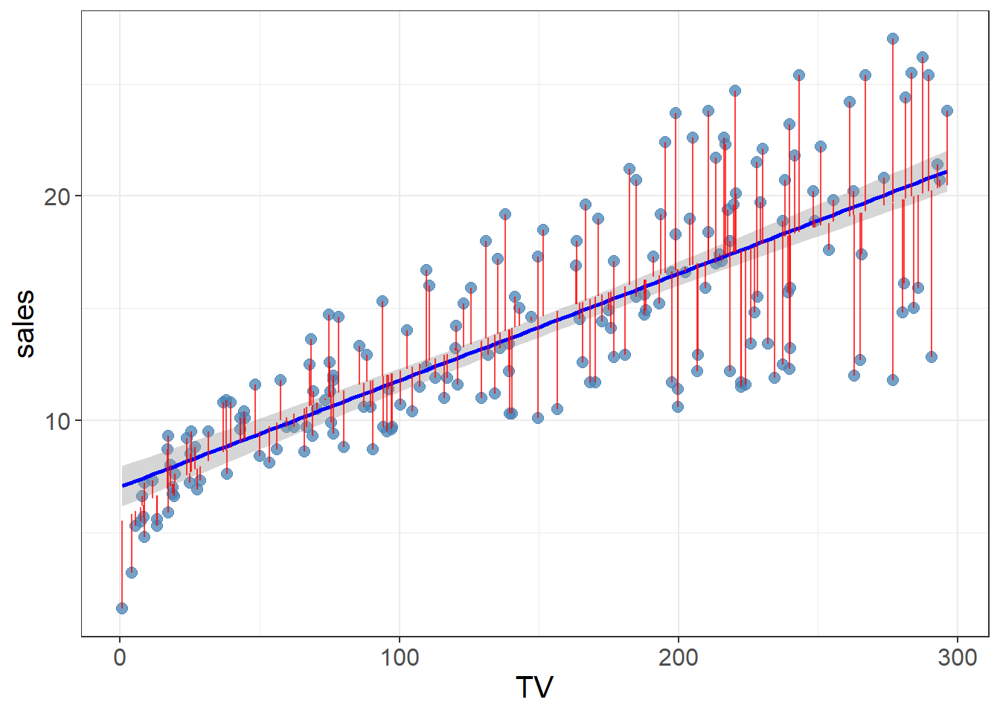
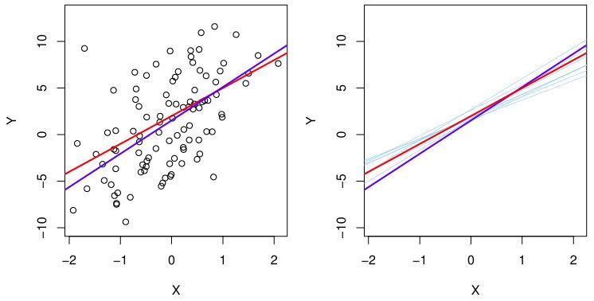

TV, radio, and newspaper seems to have a positive association to sales. The more the company spends on TV advertisement, the higher the associated sales. Newspaper seems to be the weakest advertising method.
Some questions that linear regression can answer:
Is there a relationship between advertising budget and sales?
How strong is the relationship between advertising budget and sales?
Which media are associated with sales?
How large is the association between each medium and sales?
How accurately can we predict future sales?
Is the relationship linear?
Is there synergy among the advertising media?
Simple Linear Regression
It is a method of predicting a quantitative \(Y\) on the basis of a single predictor variable \(X\), assuming the relationship between \(X\) and \(Y\) is linear. It is given by the equation \[
Y \approx \beta_0 + \beta_1 X
\] In our advertising data set, \(Y\) is sales, and \(X\) can be TV. We can regress sales onto TV by fitting the model \[
\text{sales} \approx \beta_0 + \beta_1 \times \text{TV}
\] Here, the unknown constants, or coefficient parameters, are \(\beta_0\) (intercept) and \(\beta_1\) (slope). We estimate these numbers using the training data set. Once we have the coefficients, we can predict future sales using the same equation \[
\hat{y} = \hat{\beta}_0 + \hat{\beta}_1 x
\] The hat symbol, ^, is the estimated value for an unknown parameter, coefficient, or predicted response.
Estimating the Coefficients
The question is how do we calculate the coefficient parameters using the training data set? We want to find the \(\beta_0\) (intercept) and \(\beta_1\) (slope) such that the resulting line is as close as possible to the data points. How do we measure this closeness? The most common approach is the least squares criterion. To illustrate, see below:
Show me the code
advertising <- advertising %>%mutate(res =residuals(loess(sales ~ TV)))ggplot(data = advertising, aes(x = TV, y = sales)) +geom_point(alpha =0.75, size =2.5, color ="steelblue") +geom_smooth(method = lm, color ="blue") +geom_segment(aes(xend = TV, yend = sales - res), color ="red", alpha =0.75) + karl_theme

The residual, \(e_i\), is \(e_i = y_i - \hat{y}_i\), which is the difference between the \(i\)th observed response value and the \(i\)th response value predicted by the linear model. The residual sum of squares (RSS) is then \[
RSS = e_1^2 + e_2^2 + \cdots + e_n^2
\] The figure above displays the linear regression fit to the Advertising data, where \(\beta_0\) = 7.03 and \(\beta_1\) = 0.0475. In simple words, an additional $1,000 spent on TV advertising is associated with selling approxiamtely 47.5 units of the product.
Assessing the Accuracy of Coefficients
The true relationship between X and Y is \[
Y = f(X) + \epsilon
\] If \(f(X)\) is approximated to be linear, then the relationship is \[
Y = \beta_0 + \beta_1 X + \epsilon
\] where the error term \(\epsilon\) is a catch-all for what we miss with this simple model. This error is independent of \(X\). This equation is also the population regression line which is the best linear approximation to the true relationship between \(X\) and \(Y\). To illustrate between the population regression line and the least squares line, see below:

Left:
Red line is the population regression line
Blue line is the least squares line
the least squares estimate for \(f(X)\) based on observed data
Right:
Red and blue lines as in the left panel
Light blue lines are ten least square lines computed on the basis of a separate random set of observations
On average, the least squares lines are close to the population regression line
The least squares lines and the population regression line are different but close, just like the sample mean will be different from the population mean, but it will provide a good estimate. This estimation is unbiased.
Important
Unbiased estimation expects the least squares line (or sample mean) to be close to the population regression line (population mean) if we increase the number of observations. It does not systematically over or under estimate the true parameter.
The Standard Error
The accuracy of a single estimate of a sample mean \(\hat{\mu}\) to the population mean \(\mu\) is given by computing the standard error of \(\hat{\mu}\), given by: \[
\mathrm{Var}(\hat{\mu}) = \mathrm{SE}(\hat{\mu})^2 = \frac{\sigma^2}{n}
\] where \(\sigma\) is the standard deviation of each of the \(Y_i\) of \(Y^2\). It tells us the average amount the \(\hat{\mu}\) differs from the actual \(\mu\), and that as you increase \(n\) the lower the standard error. An equivalent standard error equation for the linear regression coefficient parameters are given by:
\[
\text{SE}(\hat{\beta}_1)^2 = \frac{\sigma^2}{\sum_{i=1}^n (x_i - \bar{x})^2}
\] Some insights about these equations:
\(\sigma^2\) is Var(\(\epsilon\))
Standard Error of \(\hat{\beta}_1\) is smaller when \(x_i\) are more spread out
we have more leverage to estimate the slope
Standard Error of \(\hat{\beta}_0\) would equal Standard Error of \(\hat{\mu}\) if \(\bar{x}\) is zero (\(\hat{\beta}_0\) would be equal to \(\bar{y}\))